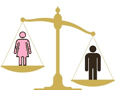

Gender inequality in India is a major social problem where men and women are not treated equally. In many parts of the country, girls still receive fewer opportunities for education, employment, and decision-making compared to boys. Issues like the wage gap, domestic violence, early marriage, and limited access to resources continue to affect women's rights and freedom. Cultural beliefs, lack of awareness, and traditional thinking make the problem worse. Studies show that states like Bihar, Rajasthan, West Bengal, and Andhra Pradesh still face high levels of gender inequality. The government has taken steps through programs like Beti Bachao Beti Padhao, Self-Help Groups, and women reservation schemes to improve the situation. To achieve true equality, society must respect women, provide equal education, ensure fair job opportunities, and promote awareness about women's rights. A gender-equal society leads to progress, safety, and development for everyone.
